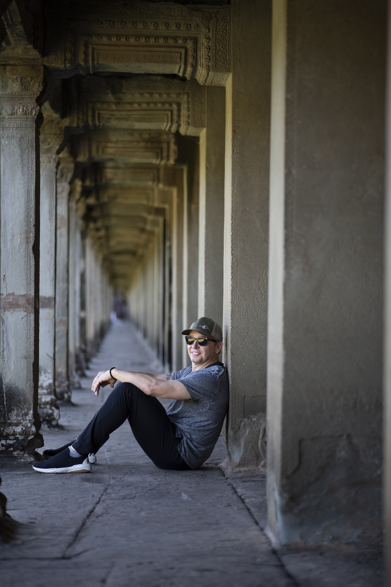

About

Matt Mihály
Based in the Bay Area, CA.
I shoot with Sony cameras (currently an A1 II) and various Sony and third-party lenses.
Contact: matt@mattmihaly.com
Based in the Bay Area, CA.
I shoot with Sony cameras (currently an A1 II) and various Sony and third-party lenses.
Contact: matt@mattmihaly.com